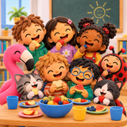

Scuola dell'Infanzia“Don Milani” a Cervia
La descrizione è generata con l'intelligenza artificiale: il piatto servito può essere diverso. Non sono consigli medici o nutrizionali. Perché?
Il nome dei piatti in italiano arriva dal menu ufficiale del Comune di Cervia. Tutto il resto (descrizioni, fonte proteica principale, icona del tipo di pasto e traduzioni nelle altre lingue) è stato generato con l'aiuto dell'intelligenza artificiale.
Sono indicazioni per curiosità, da prendere con le pinze: non sono informazioni verificate né fornite da esperti di nutrizione.
Per dubbi sull'alimentazione rivolgiti al pediatra o al servizio mensa. In caso di differenze vale il menu ufficiale in italiano.
Mensa Don Milani sul telefono: la ritrovi con un tocco, tra le icone della schermata Home.
